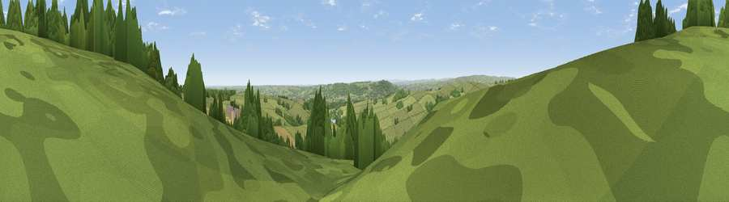

Fox Crag
#16008 in England · top 21% of its area beats it · near FarnleyThe view, rendered

A 360° render of this exact spot computed from the terrain model, tree cover and land cover — summer colours, afternoon light, calibrated against photographs of famous viewpoints. Real trees, hedges and buildings will differ in detail.
The panorama
Grey silhouette: terrain skyline in each direction (720 bearings, Earth curvature and refraction included). Dashed green: skyline with trees (+15 m) and buildings (+8 m) as obstacles. Blue strip: how far the ground is visible on each bearing.
Where the view opens
Wedge length = distance to the farthest visible ground on that bearing (vegetation-aware). Rings at 10, 25 and 50 km.
What fills the view
50% woodland · 47% grassland · 2% cropland ·
Angular shares of the visible panorama (visual magnitude), not map area. Landscape diversity 0.36 (0–1 Shannon).
Key numbers
More beautiful places nearby
The staircase of upgrades: each row has a higher view potential than everything closer. Driving times are estimates from straight-line distance, calibrated against real road routing — check an actual route before setting out.
| Place | Direction | Drive | Score |
|---|---|---|---|
| Viewpoint near Timble | NW · 1 km | ~2 min | 68.1 |
| Viewpoint near Timble | WNW · 1 km | ~3 min | 68.3 |
| Viewpoint near Otley | S · 7 km | ~14 min | 77.5 |
| Viewpoint near East Witton | NNW · 34 km | ~53 min | 77.8 |
| Hood Hill | NE · 42 km | ~62 min | 79.6 |
| Viewpoint near Kirby Knowle | NE · 44 km | ~64 min | 80.5 |
| Viewpoint near Thirlby | NE · 44 km | ~64 min | 81.5 |
| Beacon Hill | NNE · 55 km | ~76 min | 84.7 |
53.95622, -1.68057 · source: osm viewpoint · position refined by local search. Computed location — check access rights before visiting.